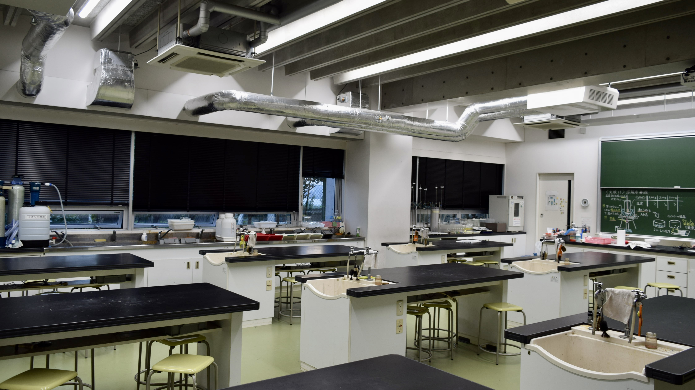

トップ
生物室
校 庭
アンケート

化学室
科学体験教室
化学室では、科学体験教室を実施します。中学１,２年生は全て実験授業なので、顕微鏡の扱いには中学1年生でもかなり慣れています！そんな中学１年生が主となって皆さまをサポート致しますので、是非ご参加いただければ幸いです。
科学体験教室の詳細を見る
東京都市大学等々力中学校高等学校 理科部 HP
東京都市大学等々力中学校高等学校 理科部 Twitter
東京都市大学等々力中学校高等学校 HP
Copyright©TCU Todoroki Science Research Club , All Rights Reserved.